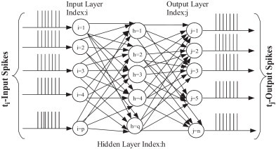

An ongoing project of mine to help me keep better track of my spending habits. This is my first attempt at a full stack web application. The tech stack involves a Django backend, jQuery being used on the frontend, and PostgreSQL as the datastore - all hosted on an AWS Elastic Beanstalk instance. Future plans involve implementing d3.js for visualization of expenses overtime, and implementing React on the frontend to create a smoother and more pleasant UI/UX. https://www.holeinmywallet.com/
Hunter Betz |
|
github.com/h-betz |
|
Projects
-
Spoken Letter Classification using Spiking Neural Networks
My senior project at Rutgers involved using Spiking Neural Networks to model brain activity. I decided to model brain activity when it "hears" spoken letters of the English alphabet. Although not as successful as I would have liked, there is plenty of room for improvement in terms of tweaking the firing rate to fire more often in a given unit of time.https://github.com/h-betz/NeuralNetwork
-
Image Classification

As part of an intro to AI course at Rutgers, my final project consited of implementing 3 classification algorithms in a language of my choice. I decided to implement K-Nearest Neighbors, Perceptron, and Naive Bayes. The purpose was to study the effectiveness of various algorithms in classifying images. In this case our images were from MNIST dataset and a dataset of images of faces and non-faces. More details and source code can be found here https://github.com/h-betz/ImageClassification
-
Malloc
A project done in my systems programming class where we were to implement the C function of malloc - on demand memory allocation - and if possible, improve in the areas that malloc falls short. The naive implementation is to allocate a large chunk of memory in the beginning of the program and "allocate" memory from there as needed. However, this is an improved version of that in which it uses the sbrk function which allocates memory directly from the system. There are several written tests to help you understand the processes behind it as well as a readme file that further explains the main variables and functions. https://github.com/h-betz/Malloc